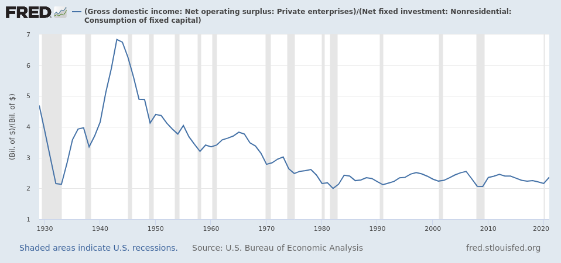
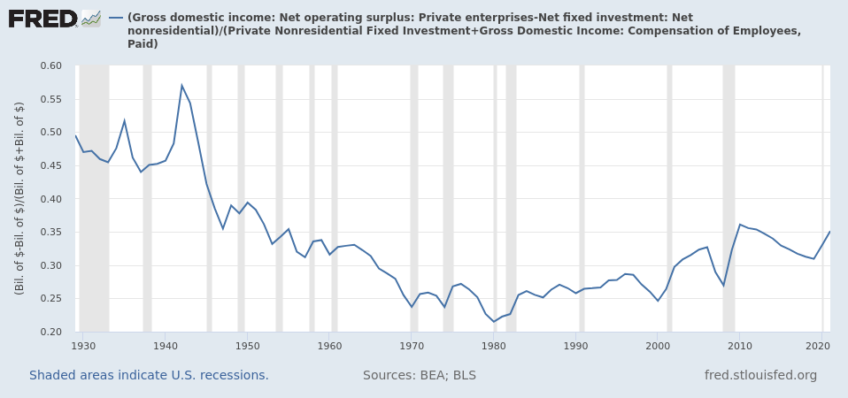

10 Profit Rate
Michael Roberts
Movements in the profitability of capital as a key indicator of trends in an economy, even in one like China where state investment dominates.
A ground-breaking analysis by Tomas Rotta of Goldsmiths, London and Rishi Kumar from University of Massachusetts, called Was Marx Right? Rotta and Kumar analyse the profitability of capital in 43 countries from 2000-14 using the World Input-Output Database (WIOD) for defined productive and unproductive sectors.
They show the high ratio of productive capital stock in China compared to other countries and conversely the high ratio of unproductive capital in the US. And they compile a world profit rate, which declined over the period, mainly because the organic composition of capital rose faster than the rise in the rate of surplus value – as forecast by Marx’s law. Profit rates declined at the aggregate global level, between countries and within countries. They found that rich countries have lower profit rates because of the rise in the capital stock tied up in unproductive activity.
According to Adam Smith, productive labour produces a profit and produces just tangible commodities. For Marx, the first part of this definition, the production of a profit, is correct, whereas the second is wrong. “Marx explicitly criticizes Smith for mixing up a definition of productive labour based on (surplus) value with a definition based on the physical attributes of the commodity.” Servants are unproductive because they are not employed by capital, not because they do not produce external objects. And labour that supervises workers is unproductive. Unproductive sectors are those that do not produce new value but instead get value and surplus value from new value-creating sectors. The former includes finance, real estate and government. As you might expect, in mature advanced capitalist economies, the share of value going to unproductive sectors rises.
The post-Keynesians thesis of financial crises continues to hold sway among many. The ‘financialisation hypothesis’ is that the cause of modern capitalist crises is to be found in the ‘financialisation’ of what used to be industrial capitalism; and this has caused rising inequality and capitalist crises, not falling profitability or increased exploitation in investment and production.
Roberts (2023) IIPPE 2023 Part Two – China, profitability and financialisation
10.1 Tendency of Falling Profit Rate
From Jacobin debate 2023
Ackerman
Brenners Long Downturn
Robert Brenner’s theory of the post-1973 global economy — which depicts a long era of “stagnation” caused by chronic industrial overcapacity — is logically dubious and doesn’t fit the facts. But the theory’s biggest problem is its politics.
In Brenner’s account, for a half century the world economy has stagnated under the weight of a long crisis of profitability caused by chronic overcapacity in global manufacturing — a problem that first made itself felt with the postwar reentry of German and Japanese firms into already-saturated export markets, but which has only gotten worse with time.
For Brenner, chronic overcapacity is the symptom of a flaw in the economic mechanism of capitalism, arising from the unplanned anarchy of market production: firms in overcrowded industries, saddled with sunk costs in the form of fixed capital, lack the incentive to withdraw from unprofitable lines of business, resulting in intractable pileups of excess capacity that breed cutthroat competition, sinking profit rates, and, ultimately, stagnation.
Reformism
Bidenomics will result in “a massive exacerbation of the problems of overcapacity on a world scale,”. This exposes “neo-Kautskyite” socialists as lacking a “credible answer to the structural logic of capital.”
A few years before he debuted his thesis in a 1998 issue of the New Left Review, Brenner delivered a talk to fellow members of the socialist group Solidarity on the problem of how revolutionaries should relate to social democrats. (The talk was published under the title “The Problem of Reformism.”
Reformism is “our main political competitor,” and “the inescapable fact is that, if we want to attract people to a revolutionary-socialist banner and away from reformism, it will not generally be through outbidding reformists in terms of program. It will be through our theory — our understanding of the world.”
The social basis of reformism, Brenner explained, lay in the ranks of the trade union bureaucracies and social democratic party apparatuses. Since their organizational interests were unavoidably threatened by outbreaks of unabashed class struggle, reformists always opposed militant movements from below. They urged workers to confine their actions to voting for social democrats on election day and backing official trade union actions on the job. Reformists, in other words, want workers to place their fate in the hands of reformists. That was why they were always claiming that “state intervention can enable capitalism to achieve long-term stability and growth”; that the working class can “use” the state to pursue those objectives “in its own interests.”
Revolutionary socialists must always emphasize that “crises arise from capitalism’s inherently anarchic nature,” and that because of the system’s “unplanned” character, “governments cannot prevent crises.” Only then could they make the case to workers that reformism cannot and will not work, regardless of the alleged good intentions of the reformers. This, according to Brenner, was why, “for revolutionaries, so much is riding on their contention that extended periods of crisis are built into capitalism.”
When Eduard Bernstein, the protégé-turned-apostate of Marx and Engels, called on social democracy to embrace a reformist route to socialism, he put the issue of capitalist crisis at the heart of his case. With the scenario of total breakdown seeming increasingly remote, the revolutionary option was robbed of both its plausibility and its justification.
Bernstein’s salvo forced the defenders of Marxist orthodoxy, in its various shades, to sharpen their own theoretical arguments, and by the 1920s there were two identifiable poles of analysis in Marxist crisis theory: Rosa Luxemburg’s “underconsumptionist” view, which stressed the inadequacy of working-class purchasing power as the main source of the system’s crisis tendencies; and the German social democrat Rudolf Hilferding’s “disproportionality” theory, which traced the root of crises to the recurrence of accidental mismatches between the outputs of the different branches of industry — a hazard arising from the “blind,” unplanned nature of capitalist investment.
Planning and reformability - Keynes
Hilferding’s crisis theory, which attributed economic turbulence to “disproportions” in the pattern of capitalist investment, arising from the system’s “anarchic” and “unplanned” development - only planning could solve the problem of disproportions. Capitalists themselves had been forced to accept the logic of planning to stabilize increasingly chaotic markets. Cartels were ineffective in the final analysis: as long as they remained purely private, voluntary initiatives, they were unable to bring order to their industries because they could not effectively discipline their members. To stabilize the economy in a lasting way, comprehensive planning would have to be undertaken by the state. In the ’30s, “planning” was seen by many on the Left as the ruling class’s preferred path to economic stabilization, the route to recovery that posed the smallest threat to the status quo.
Left-wing socialists and communists denounced the allegedly fascist undertones of planism and espoused neo-Luxemburgist doctrines of underconsumption. For them, taming the anarchy of production seemed potentially achievable under capitalism. What seemed unthinkable was a drastic redistribution of wealth. A few years later the wheel would turn once again, as a combination of war and pressures from below forced the capitalist world to accept redistributionism on a scale that had once seemed inconceivable.
It was only a matter of time before underconsumptionism, once regarded as the radical doctrine of Red Rosa, came to be seen as the ruling-class palliative of John Maynard Keynes
1970s - profit squeeze
In the 1970s, a very different kind of crisis descended on the capitalist world. This time, there was no question of attributing the problem to a shortage of mass purchasing power. Profit-squeeze account of the crisis immediately gained adherents among Marxist and Marx-adjacent scholars in the English-speaking world.
The profit-squeeze theory painted the turmoil of the 1970s as a sort of mirror image of the 1930s Depression: just as the earlier calamity had been exacerbated by wages that were too low, sapping aggregate demand, now working-class militancy had pushed wages up too high, eroding the profit rate and bringing investment to a halt.
Initially this account held attractions across the Marxist spectrum. All sides could agree that profit rates had, in fact, declined as wages had surged. And for a fair number of radicals, the theory could be seen as vindication for the kind of militant “transitional” strategy long espoused by Trotskyists: demanding “reforms” calculated to be impossible for capitalism to deliver. The resulting wage demands had now produced a full-blown crisis of capitalism to which ruling-class Keynesians had no response.
Once it became clear that the 1970s crisis was not leading to revolution, the profit-squeeze account came to be seen in the opposite light: as giving ideological sanction to schemes of wage moderation — “incomes policies” — long advocated on anti-inflation grounds by Keynesian experts in social democratic parties.
Mattick - Grossmann
In 1969, a book called Marx and Keynes: The Limits of the Mixed Economy was published by Paul Mattick, a German council communist and self-taught adept of Marxian political economy who had settled in the United States in the 1920s to become a tireless — and, for decades, generally ignored — evangelist for the ideas of the largely forgotten Polish theoretician Henryk Grossmann, whose 1929 opus The Law of Accumulation and Breakdown of the Capitalist System was notable for being one of the few substantial works of pre-1970s Marxist writing to ground its theory of crisis firmly in Marx’s famous “Law of the Tendency of the Profit Rate to Fall.”
The Keynesian solution to the economic problems that beset the capitalist world can be of only temporary avail, and that the conditions under which it can be effective are in the process of dissolution. For this reason the Marxian critique of political economy, far from having lost its pertinency, gains new relevance through its ability to comprehend and transcend both the ‘old’ and the ‘new’ economics.
New Left Marxists, in quest of a new reform-proof crisis theory, embraced Mattick as their lodestar and dusted off Marx’s falling rate of profit (FROP) conjecture. Sweezy: a “fetishization of the falling tendency of the rate of profit”.
In the eight decades between Friedrich Engels’s death and the OPEC oil shocks, the FROP played almost no role in the various crisis theories of most leading Marxist authorities. Rosa Luxemburg was famously contemptuous of the idea. Karl Kautsky mentioned it as a factor tending to promote the centralization of capital, but not as an important cause of crisis. The relevant chapter of Sweezy’s hugely influential 1942 textbook of Marxian economics, The Theory of Capitalist Development, noted that the law “has been the object of numerous criticisms from both followers and opponents” of Marx, and devoted a whole section to “A Critique of the Law.” Ernest Mandel in his 1967 Introduction to Marxist Economic Theory included a dutiful five-page section on the law and then studiously ignored it for the rest of the book.
Marx
Marx was a scrupulous scholar, and every time he tried to work out the details of the concept in his notes and drafts of the 1850s and 1860s, he found himself — as the German Marxologist Michael Heinrich has shown — lost in a maze of algebra that could only prove that a falling profit rate was a possibility, not a necessary outcome of capitalist development.
The Law of the Tendency of the Rate of Profit to Fall entered the corpus of Marxian thought thanks to Engels’s incorporation of some of these materials in the posthumously published third volume of Capital. But, as Sweezy noted in 1942, Marx’s analysis in that section was “neither systematic nor exhaustive” and “like so much else in Volume III it was left in an unfinished state.”
Perhaps the best indication of the importance that Marx attached to the law of the tendency of the rate of profit to fall is that he did not mention it in any of the works published in his lifetime, nor did he give it any further consideration in the twenty years of his life that followed the writing of the manuscript on which Volume Three of Capital is based.
Shaikh
Anwar Shaikh of the New School for Social Research, who emerged over the course of the 1970s and 1980s as the preeminent scholarly proponent of the FROP and the broader approach to Marxism with which it is associated: “classical Marxism,” in Shaikh’s terminology; “fundamentalist Marxism” (or, more politely, “orthodox Marxism”) in the mouths of its detractors. His 2016 summum opus, Capitalism: Competition, Conflict, Crisis does for Marxian political economy what Paul Samuelson’s 1947 Foundations of Economic Analysis did for neoclassical economics: setting it on a firm theoretical foundation informed by the most rigorous modern methods.
By the time Robert Brenner presented his alternative falling-profit-rate theory, the falling-profit-rate theory — the classical FROP of the third volume of Capital — had acquired an odd status within Marxism. It had never been especially popular with the leading Marxist authorities, and was now in especially bad odor thanks in part to the strident dogmatism of some of its noisiest champions. And yet, it had quietly benefited from two decades of careful and intelligent reconstruction at the hands of Shaikh and a few other serious scholars, including Duncan Foley and the French researchers Gérard Duménil and Dominique Lévy.
The point of departure for the classical Marxian falling-profit-rate theory is the centrality of laborsaving mechanization to economic growth. Long-run growth requires rising labor productivity — more and more output per worker — and to get rising labor productivity the labor force must normally be equipped with more and more capital per worker. The key question is the balance between these two trends. Unless the share of output going to profits rises to compensate, the profit rate — profit per unit of capital — will fall.
Marx’s concept of the “tendency of the profit rate to fall” depends on the idea that some force is at work within the competitive process making it at least highly likely that, over the long run, labor productivity will fail to keep up with capital intensity and the profit share of output will fail to rise sufficiently to compensate. But what could that force be?
Mikhail Tugan-Baranovsky
The capitalist’s “choice of technique” must, if anything, have the effect of pushing the rate of profit constantly higher, not lower, as Marx had claimed.
Okishio
In 1961, the Japanese economist Nobuo Okishio published a landmark paper showing that Tugan’s critique of the FROP was, at least, logically correct: at a given set of ruling market prices, and assuming no change in the real wage, any production method that a profit-maximizing capitalist would introduce must have the effect — once it’s been generalized throughout the economy — of raising, rather than lowering, the general profit rate.
The advent of the mathematically forbidding Okishio Theorem was a key reason — alongside the unavailing arguments of the FROP’s most dogmatic believers — for the falling-profit-rate theory’s descent into disrepute.
Shaikh
Shaikh developed a theory of intra-industry competition that he named (in contradistinction to the mainstream categories of “perfect” and “imperfect” competition) “real competition”
The competitive process is “antagonistic by nature and turbulent in operation. It is the central regulating mechanism of capitalism and is as different from so-called perfect competition as war is from ballet.” The martial metaphor is ever present: competition is “a war among firms.”
As the set of feasible innovations is usually skewed in the direction of technologies that increase labor productivity, but at the cost of greater capital intensity — offensive competitive behavior will in fact lead to a long-run tendency for the aggregate profit rate to fall.
The key feature of competitive behavior in Shaikh’s theory is its relentless tendency toward aggressive price cutting and cost cutting.
Okishio’s model has innovating capitalists adopting more efficient production methods for the purpose of reaping higher current profits by charging the same price as competitors while producing at lower cost. But for Shaikh, that ignores the inherently strategic and antagonistic nature of capitalist competition. Rather than sitting back and enjoying an augmented flow of profits at the old price, Shaikh’s innovating capitalist wields his newfound cost superiority as a bludgeon, pressing his advantage against rivals by mercilessly cutting the price below what his competitors can afford to charge.
Individual capitalists might prefer to use only those production methods that would increase the rate of profit. But they can’t, because they’re trapped in a destructive competitive game that forces them to adopt ever-more-capital-intensive methods while resorting to profit-destroying price reduction in the interests of competitive survival.
Hence the “beautiful dialectical denouement” noted by Duncan Foley: the very force the makes for capitalism’s vitality — profit-driven technical innovation — is also the source of its decline.
All of this only holds if such behavior is indeed “the norm in the business world,” as Shaikh claims. This is where Shaikh goes wrong, on grounds of both logic and evidence.
In Shaikh’s theory, firms that adopt cost-cutting innovations do so with the warlike intention of harming their less-efficient competitors via price reduction. But he has trouble credibly explaining exactly how they ultimately benefit from doing this, even in the long run. The best-run companies go to almost any lengths to avoid price wars. For Shaikh’s theory of real competition to be valid, real-world technical innovation would have to be driven by a competitive strategy that is rarely seen and almost never works. Rather than price, the main dimension of competitive struggle is what one important paper in this literature called “idiosyncratic demand” and what other papers call “product appeal”Demand differences (which could arise from quality or taste variation) as being the principal reason why some firms are successful in the marketplace and others are not. Product appeal accounts for 50 to 70 percent of the variance in firm size at a given moment in time; less than 25 percent is due to differences in price or cost. Virtually all firm growth can be attributed to firm appeal.
Shaikh once elegantly summarized Marx’s picture of capitalist competition as a two-front struggle: a struggle against labor to reduce costs, in which the predominant weapon is mechanization; and a struggle against competing firms for market share, in which the dominant weapon is price reduction.
Each of these processes tends to reduce the profit rate: the former by raising the level of capital intensity; the latter by reducing the profit share. However, the new microdata-based research confirms the centrality of what we might call a third front: the struggle against competition itself, in which the weapon of choice is product differentiation. Product differentiation decouples competitive success from cost and price, allowing capital to chart an alternative, profit-preserving path through the maze of competition.
Brenner
Brenner’s by-now-familiar account seems straightforward: thanks to a postwar onslaught of lower-cost producers entering global manufacturing industries, a problem of chronic excess capacity emerged that pushed down manufacturing prices and, therefore, overall profit rates. The resulting deficiency of profitability caused low investment and stagnant growth.
But as a long line of critics has pointed out — including Shaikh in his review of Brenner’s The Economics of Global Turbulence, published in a 2000 issue of Historical Materialism — a fall in prices in one sector of the economy (manufacturing in this case) shouldn’t have any particular effect on the overall profit rate, because one sector’s output prices are every other sector’s input prices.
Brenner was perfectly aware of this when he wrote The Economics of Global Turbulence. So he included a fallback argument: Perhaps, as a byproduct of the falling prices that resulted from excess competition, real wages increased, and this was what caused the fall in the profit rate?
This line of argument would seem to make Brenner’s a wage-squeeze theory. Brenner, however, is a vehement critic of wage-squeeze theories, insisting (correctly) that the wage share didn’t rise nearly enough in the 1960s and 1970s to account for the magnitude of the observed fall in the profit rate.
When it comes to the ultimate causes of “stagnation,” Brenner’s argument is a kind of Schrödinger’s cat of crisis theories: it’s a theory of excess competition when you’re looking at it and a wage-squeeze theory when you’re not. Like the cat, neither survives scrutiny.
Brenner’s theory lacks a logically credible mechanism linking low profitability to stagnation. On the one hand, he suggests that the cause of stagnation is underinvestment due to low profit rates. But at the same time, he claims low profit rates are brought on by overinvestment. One would think that years of underinvestment would eventually eliminate the excess capacity — or, alternatively, that never-ending overinvestment would be incompatible with stagnation. But in Brenner’s theory there is somehow always an economy-wide investment drought alongside continual excess capacity.
(Ackermann here goes into empirics - see Villarreal’s rebuttal)
His argument can be summarized in three steps: (1) crises are caused by the unplanned , anarchic nature of capitalism; (2) therefore, “governments cannot prevent crises”; (3) the inability of governments to prevent crises gives revolutionary politics a rationale.
But capitalist crises cannot be due to the mere absence of planning. It’s the extended division of labor that explains the susceptibility of all modern economies — capitalist and centrally planned alike — to coordination failures, and thus to crises of different kinds.
The world growth rate in the “booming” Belle Époque years averaged 1.4 percent. In the so-called long downturn that began in 1973, that number was 2.5 percent.
Ackerman (2023) Robert Brenner’s Unprofitable Theory of Global Stagnation
Villarreal
Many Marxist economists, such as Shaikh, Brenner, and Roberts, to name a few, use capital stock measures to estimate profitability. This is something I’ve called out as a theoretical error in the past, and I think Ackerman’s critique here is a good highlight as to some of the problems with this approach, although I think there are other good reasons to reject the capital stock as the equivalent to what Marx called constant capital in his rate of profit equations.
Depreciation, not the capital stock, is constant capital as Marx describes it, and it’s constant capital that Marx invokes when he discusses the rate of profit. Marx proposed a tendency for the rate of profit to fall caused by rising levels of constant capital.
The income which is earmarked for depreciation is also available to capitalists, and they can consume it if they allow for net negative investment levels, however this undermines their structural class role as capitalists.
Depreciation represents the living labor which must go back into reproducing the means of production today when we understand it as a part of gross investment. When we compare surplus to wages and depreciation, we see the current rate of return for a given time.
If we wanted to see the rate of return of an asset, we’d have to look at the income it can generate over its whole lifetime.
For all these reasons I reject rate of profit measures based off the total capital stock. We need to see the rate of profit as a ratio of surplus to constant capital.

This is a fascinating chart, in that it indicates that the return on reproducing the capital stock is roughly the same as it was during the Great Depression and the 2008 financial crisis, and the only reason the total rate of profit isn’t that low is due to a greater rate of exploitation during the neoliberal period.
When it comes to studying depreciation and the capital stock, what matters far more than estimating the absolute size of the capital stock is estimating how it’s changing over time. If we know nothing else besides the level of investment, we can come up with estimates for depreciation and the capital stock by creating an estimated depreciation schedule filled each year by the investments made.
This is exactly what I did with US investment data, using a simulation I wrote in R. You can interact with this simulation here.
What Ackerman is contending is that the official recorded capital stock and depreciation measures aren’t accurate and that depreciation is actually much higher than recorded, with many assets having shorter lifespans than US statisticians estimate.
There is a bigger recovery in the rate of profit in the shorter depreciation schedule line since the 80s, it actually has a stronger tendency for falling profit rates over all.
What Ackerman has done in creating his adjustment is draw a line between two different rate of profit estimates with different depreciation schedules, switching horses midstream. Ackerman’s adjusted rate of profit statistics simply don’t provide evidence for a lack of a tendency for the rate of profit to fall.
Henryk Grossman
The deeper political contention of Ackerman’s essay is that crisis theory is a kind of dead end as it relates to politics, specifically the hope that capitalism is unreformable and therefore socialism inevitable. One name that gets mentioned in passing among the history of crisis theory is Henryk Grossman, however there are a number of important details the essay selectively leaves out.
Grossman was, after all, at one point a member of the Frankfurt school, which was hugely influential among the new left. He was kicked out for exaggerated accusations of Stalinism. However, the real divergence between Grossman and the rest of the Frankfurt school, especially what it would become after WW2, was on the question of crisis and the internal contradictions of capitalism2 . Contrary to Ackerman’s analysis, which focuses on the minutia of various marginal sects, the new left was more dominated by critical theorists such as Marcuse who believed that the internal contradictions of capitalism had been solved. Far more popular than old school Marxism was various attempts to find alternative revolutionary subjects who could destroy capitalism through other kinds of contradictions. Anti-colonial movements, radical feminism, the civil rights movements. These movements succeeded in securing bourgeois rights more fully to everyone, whether people in the developing world, women, African Americans, but the questions originally raised by the communist movement, of the toiling for a capitalist ruling class, of the destruction of society at the hands of capital, these things remain unanswered.
When the profitability crisis of the 1970s occurred, the new left at large was caught totally unprepared. Without a horizon beyond capitalism, with only reforms available to them to manage capitalism, it became inevitable that the solution would be increasing exploitation and the destruction of working class power.
Ackerman seems to suggest that capitalism did reform its way out of the profitability crisis, meaning capitalism survived while maintaining growth and employment. But, it seems clear to me that the 1970s show exactly how unreformable capitalism is, and the limits of social democracy. It represents a hard limit that capitalism cannot move beyond, which requires either the expropriation of the capitalist class or the liquidation of the working class as a political entity.
To show exactly why this is the case, let’s take a slightly different perspective on the rate of profit. Throughout all this discussion, for various Marxiological reasons, we’ve been focusing on the rate of profit as a relationship between surplus and costs. But, as I’ve mentioned previously, depreciation only exists as a really existing demand on resources to the extent it is a share of gross investment. Knowing how the capital stock is changing is useful for a host of reasons but let’s focus on gross investment for a moment.
Gross investment in fixed capital is essentially determined by technical requirements of production and competition, so long as there is competitive pressure to do so, capitalists will adopt the most efficient techniques socially available. But this also means that, so long as there is competition, the amount of surplus they can actually consume personally is limited by what they have to invest. Capitalists, much like the working class, must reproduce themselves by buying the goods which are required both biologically and socio-culturally. Unlike the working class, capitalists don’t reproduce themselves by selling their labor power, but by advancing the money to buy the means of production and labor. This means that for the capitalist class as a whole, how much money they advance in a given production cycle relative to their surplus is the cost of acquiring that surplus, and the less surplus they get for a given amount of investment and wages, the less individuals can actually reproduce themselves as capitalists.
Therefore, one key metric we can look at is a profit rate that subtracts net investment from surplus, and looks at this consumable surplus as a ratio to gross investment and wages. This surplus which excludes net investment is essentially the surplus which is valorized as consumption goods by the capitalist class. Looking at this profitability metric tells us a very different story.

From this perspective, the late 70s represented an existential moment for the American capitalist class. In 1929 they could earn 50 cents on the dollar for their investments, fast forward 50 years in 1979 and they were making 21 cents on the dollar. This means a capitalist would have had to spend nearly 250% more, not even accounting for inflation, in order to get the same magnitude of value for themselves.
The ratio of capitalist consumption to gross investment has essentially stayed flat in the neoliberal period.
This is problematic for capitalism because it’s this investment in machinery and new technologies which actually makes capitalism more efficient, dynamic, and improves living conditions, this creates the material infrastructure. As Ackerman notes, the profit to investment ratio has risen in favor of profit. This is the real stagnation, which takes hold specifically in late imperial and developed countries. Indeed, without a rising rate of exploitation, the rise in capitalist consumption would have come at the cost of net negative investment, and the destruction of this infrastructure, as happened in the great depression and world war 2.
Here is the necessary connection between the tendency for the rate of profit to fall and stagnation: so long as investment is rising as a share of non-labor income, all else being equal, the rate of profit will fall. That is, so long as the economy is moving according to the logic of capital: industrializing, mechanizing, rationalizing. At some point, capitalism reaches its limits, and it cannot industrialize any further without destroying the social reproduction of the capitalists, this is the fetters of production Marx describes, after which the capitalist class becomes smaller and smaller until it disappears. The point at which capitalism hit these limits was 1979, and to overcome them, it has sacrificed the logic of capital, as well as the working class, to preserve the capitalist class.
In previous blog posts I’ve discussed how my simulations reveal the equalization of depreciation and investment whenever the rate of exploitation and rate of capitalist consumption stop moving. You can play around with one of these simulations here, which also shows the dynamic conditions where changes in the rate of exploitation and rate of capitalist consumption cancel out changes to investment.
We happen to be living in a historical moment where a rising rate of exploitation and capitalist consumption somewhat cancel out any effect on investment. However, if we were to reverse this, and hit the limits that we did in the 70’s, the only way to increase investment further would be the destruction of the capitalist class.
Today, the increasing consumption of the capitalist class stand in the way of further investment and improvement of material infrastructure, not to mention the living standards of the working class. Declining investment has led to an increasing convergence of investment and depreciation. It’s this lack of investment which I believe is responsible for increasing stagnation of labor productivity, particularly in manufacturing.
Of course, one day, regardless of what we’ll do, we’ll hit the limits of what investing additional social resources to infrastructure will do for us, and the only material improvements will come from the application of new scientific discoveries. The question is, how do we get there? How do we get past the wall of capitalist social reproduction?
The only way, in my opinion, is through a mass understanding of crisis theory and national accounting. In the 70s, people may have grasped that the attack on the working class was the only way for capitalism to persist, but they didn’t grasp its opposite, that the only way for the working class to keep its gains, as well as continue economic rationalization, was to destroy capitalism. Grossman’s politics were essentially correct and, as his recent biography goes to show, not reducible to a kind of empty economic determinism about the inevitability of socialism. They were a strategy for taking advantage of a crisis, to allow people to understand what they meant. While every political crisis might have specific political sparks, such as the start or end of a war, what has caused structural shifts in the global economy has always been crises.
The covid crisis has caused such a shift, and we’re starting to see evidence that states are forcing higher levels of investment. If this continues, we may find ourselves back in a 1970s style profitability crisis once more. It would be better if we could be prepared to see the limits of capitalist reforms in such a situation.
Villareal (2023) The Tendency for the Rate of Profit to Fall, Crisis and Reformism
Benanav
More and more economists agree with Robert Brenner that mature capitalist economies have begun to stagnate. Seth Ackerman has written a detailed rebuttal of one particular theory of the present: economic historian Robert Brenner’s theory of a persistent slowdown — a “long downturn” — in the advanced capitalist economies.
In the course of a piece that weaves its way through more than a century of left-wing debate, Ackerman tries to connect Brenner’s long-downturn theory to a much older Marxist tradition, which argues that there is a long-run tendency in capitalist societies for the rate of profit to fall. Ackerman argues that Brenner and his acolytes are the last holdouts, the last true believers in a theory that was disproven long ago.
I argue that Ackerman has misread Brenner as a final crisis theorist. In truth, Brenner is a theorist of long waves in capitalist development who stumbled onto a theory of secular stagnation.
Secular stagnation presents itself, in Brenner’s work, as a difficult puzzle, precisely because Brenner has no truck with any Grossmanite theory of the long-run tendency of the profit rate to fall.
I resolve the puzzle that Brenner’s work presents by connecting it to a long-unfolding process of deindustrialization and a shift of labor into services.
Most Marxists who talk about profit rates do not believe in a long-run tendency of the rate of profit to fall. Instead, they are long-wave theorists. They chart transitions between long periods of rapid economic growth and periods of slower growth and economic crisis. Ernest Mandel, Immanuel Wallerstein, Giovanni Arrighi, Robert Brenner, Anwar Shaikh, Gérard Duménil, and Dominique Lévy are all long-wave theorists. They can all count themselves as followers of Nikolai Kondratiev, who first theorized the existence of fifty year supercycles of economic growth and decline, on which shorter business cycles are superimposed. Brenner has distinguished himself by arguing for a 1973–2023 “long downturn.
Joseph Schumpeter did much to develop Kondratiev’s long-wave theory. For that reason, I think of Marxists in this camp as neo-Schumpeterians. Schumpeter’s essential argument was that what drives long waves are periodic technological revolutions. Long waves are aggravated and intensified by the credit system, which overlays a boom-and-bust dynamic on top of what would otherwise be. The point of the long-wave theories is to say that capitalism’s historical tendency to achieve 1.5 to 2 percent average growth per year does not take the form of a calm expansion at a steady rate. Rather, it is a tendency that emerges only as the average of turbulent boom-and-bust cycles and at times brutal competitive conflict.
Given Ackerman’s interest in non-price-based forms of competition, it is important to note that Schumpeter integrated a theory of oligopolistic competition into his long-wave theory, in a way that also influenced Brenner. Schumpeter famously argued that the appearance of oligopoly — that is, of a few large firms capturing most of the market in an industry — is not a sign of the maturation or exhaustion of capitalism. Nor can it be counted among the causes of an inbuilt tendency of the system to slow down.
On the contrary, big business is the organizational form most adequate to the immense scale of investment needed for modern-day production. Large-scale firms emerged victorious during the Gilded Age boom. They are responsible for massive improvements in productivity. Of course, they prefer to battle it out with one another on the basis of quality, rather than price. They also create many barriers to entry, by increasing the costs to customers of switching between brands.
Oligopolistic competition reigns, Schumpeter argues, because it is the only way for large-scale firms to secure the space for the major investments in plant and equipment through which they realize massive efficiency gains. The point is not only that these oligopolies do not block progress. Their research and development arms, which they are able to pour money into precisely because of their oligopolistic pricing strategies, become the major sources of productivity growth for the wider economy.
Thus, oligopolies do innovate, and they pass on gains of innovation to consumers. They do so because they know that the next challenger to their reign is always around the corner. They are always at risk of being dethroned and are periodically dethroned in every industry. During periods in which industrial leadership is contested, polite, non-priced-based competition often gives way to brutal, price-based conflict.
We now have all the tools we need to understand Brenner’s theory of the long downturn, as published in The Economics of Global Turbulence, which first appeared as a special, book-length issue of the New Left Review in 1998. Brenner’s book offered a simple modification of Schumpeterian long-wave theory. He said that capitalist creative destruction plays out in international markets. American large-scale firms in the long boom of the 1950s and ’60s. They weren’t price takers. Instead, they engaged in “cost-plus” or markup pricing strategies. Their polite, non-price-based competition was, however, interrupted in the mid-1960s by the incursion of low-cost Japanese and German manufactured goods into the US domestic market. The German and Japanese states had fostered the growth of their own large-scale firms behind tariff barriers and protected by currency undervaluation. These firms launched themselves first into the world market, and then invaded the US market, using a low-price strategy to rapidly grab market shares.
Brenner deploys profit-rate accounting to show that the decline in profitability in the 1970s was the result of a fall in capital productivity, that is, the income generated for each unit of capital invested, rather than a fall in the capital share, that is, the share of this income capital keeps for itself.
In other words, Brenner argues, it wasn’t workers’ success in raising wages, but capital’s failure to restore the conditions of non-price-based competition in manufacturing that led to the fall in profit rates.
Brenner argues that US firms dug in their heels and refused to cede their ground, as did their competitors. The result was a long war for price leadership, accompanied by a temporary but ultimately long-lasting fall in the rate of profit. Brenner has argued that this battle continued for longer than it should have because, as Shaikh has argued in his own theory of real competition, major spoils will go to the winners. Most of Brenner’s subsequent work is about how what started as a trade war became a currency war, and how state policies aimed at preventing their firms from suffering defeat issued in financial bubbles, then crises, and then long bouts of stagnation.
Central to Brenner’s account, and to the general perspective of the long-wave Marxists, is that capitalists responded to the vanishing of investment opportunities in a second way, too: by making war on their domestic working classes. The result was a well-documented tendency of the capital share to rise, which has partially offset the decline in capital productivity, but at the cost of fifty years of real wage stagnation.
Brenner’s theory thus has no relation to any Marxist theory of the long-term tendency of the rate of profit to fall. It is also unrelated to any Keynesian theory of “secular stagnation.” His account is a Schumpeterian long-wave theory, modified to account for the ways that international competition among oligopolistic firms has been key to explaining shifts in economic growth rates over the past fifty or so years. The extended nature of this downturn remains a puzzle.
Over time, however, Brenner has abandoned this theory, and has instead begun to argue that capitalism had transformed fundamentally. Brenner believes that capitalists have made peace with low growth rates. They are no longer interested in restoring dynamism to the wider economy. Instead, they are focused on maintaining a high capital share of income.
Industry is the sector at the center of long-wave theories because it has long been the main source of capitalist dynamism.
Once you see that Brenner’s story about rising international industrial competition is unfolding in the context of global deindustrialization, the puzzle of the long downturn becomes much easier to understand. Even though GDP is still growing, that income growth generates less new demand for products in the industrial sector, limiting the growth of industrial markets.
This same point helps us solve the riddle of Shaikh’s critique. Shaikh points out that one sector’s output is another sector’s inputs, so the nonmanufacturing sector should have benefited from the decline in prices in manufacturing. That no doubt happened.
But the nonmanufacturing sector was not able to do much with its good fortune, because possibilities for efficiency gains outside of manufacturing — that is, in the service sector — remained low. Profit rates in nonmanufacturing are low not due to excess capacity, but rather due to the sector’s low productivity growth potential. In services, there are just fewer options for continually increasing efficiency.
The service sector isn’t just any collection of activities: it is a residual sector, where we find those activities that have resisted industrialization or computerization for a variety of material or social reasons.
As services come to represent larger shares of the total output of the economy, that has lowered the economic growth potential of the economy. Meanwhile, as manufacturing comes to represent a smaller share of the total economy, it higher productivity-growth potential translates into fewer economy-wide effects.
These points about the causes of the ongoing economic slowdown requires no further references to profit-rate analysis. Although the point is a little technical, it is not difficult to understand. Brenner documents a long-term fall in capital productivity, that is, the income produced for every additional unit of capital invested.
This decline could occur for at least two reasons. One would be worsening overcapacity: firms are piling into an industry, in the context of a brutal competition for market shares, increasing output beyond what the market can bear.
The other would be reduced opportunities for technological change: every unit of capital added to this industry generates less income than before, because there are fewer opportunities for raising productivity levels.
Continued low capital productivity reflected, not economy-wide overcapacity, but rather the shift to services.
My revision to the Brenner thesis aligns me much more closely with certain strands of the “secular stagnation” literature, which arrives at a similar pessimistic conclusion about the long-term growth prospects of the economy. That literature has nothing to do with Grossmanite theories of the tendency of the rate of profit to fall, either. But secular stagnation theories are theories of a long-run decline in rates of profit.
Keynes
Keynes predicted that if society got capital accumulation going again it “ought to be able to bring down the marginal efficiency of capital to zero within a single generation.” Keynes thus took a fall in the rate of profit to zero not only as a tendency of his time, but as a goal.
Keynes’s reasons for thinking that the rate of profit was falling and would fall further were like Smith’s: he believed that the essential phase of capital accumulation — the equipping of society with structures, machines, and other equipment — was coming to an end, and that in the future, growth would slow to the true rate of technical change.
Keynes inspired the American economist Alvin Hansen to theorize what Hansen called “secular stagnation” as a tendency of the twentieth-century economy. This, too, is a theory of the falling rate of profit. Schumpeter said derisively: “There is surely no such gulf between Marx and Keynes as there was between Marx and Marshall. . . . Both the Marxist doctrine and its non-Marxist counterpart are well expressed by the self-explanatory phrase that we shall use: the theory of vanishing investment opportunity.”
Even Schumpeter suggested that at some point, capitalist evolution might “permanently slacken down, whether from reasons inherent in or external to its economic mechanism,” making socialism more likely to succeed it.
End of Urbanization
Robert Gordon, like Smith and Keynes, believes that we have done the main work of equipping rich Western societies with plant and equipment, as signaled by the end of urbanization, that is, the end of the build-out of residential construction.
Process Innovations
The big problem is a falling potential for process innovations, not product innovations.
Vanishing Investment Opportunities
Larry Summers, who restarted the debate on secular stagnation, initially placed more emphasis on an excess of private savings rather than a deficit of private investment. But his analysis comes to the same point: savings are excessive because of a vanishing of investment opportunities.
By now “secular stagnation” has become a mainstream view, having no necessary association with Marxist or heterodox economic thinkers, like Robert Brenner.
Oliver Blanchard thinks that, alongside a too-high savings rate, the vanishing of investment opportunities means that secular stagnation is likely to return in the near future. As he recently said:
I believe that global secular stagnation was and is driven by deep structural factors that neither COVID nor inflation have done anything to reverse. Once central banks have won the fight against inflation, which they will, we shall most likely return to a macroeconomic environment not dramatically different, at least in this respect, from the one before COVID.
Marxist long-wave theorists do offer a political account of changes in class relations over the course of long waves, which is relevant for thinking through the political consequences of secular stagnation today.
The basic Marxist theory goes like this. During long systemic upswings, capitalists’ rates of profit are higher, and so are economic growth rates. Capitalists are more willing to engage in polite competition with one another. Capitalists are also more willing to share the gains of growth with the working class and with society.
These positive outcomes are not necessarily guaranteed in upswing eras, but they are possible if workers and other groups organize and fight for change. In these eras, the reformist wings of these groups will tend to win out because there is a lot to gain from compromising with the capitalists in periods of high profitability.
By contrast, during systemic downswings, capitalists’ rates of profit fall. Capitalists are more likely to undercut one another through nasty price competition. They are also less willing to share the more meager gains of rising productivity with workers or the broader society, so wages stagnate, and so do tax takes.
Ackerman’s reconstruction of Brenner’s account makes no mention of this essential aspect of the argument: that periods of low profitability are associated with rising class conflict. Capitalists are trying to make up for falling capital productivity by raising the capital share, resulting in wage stagnation. In downswing periods, advocates of compromise with capitalists mostly just organize the defeat of the working class. The same is often said of social democratic and labor parties: they stopped fighting for people and instead organized their defeat.
Schumpeter drew the exact same political insights from his own long-wave theory, but had the opposite worries. Schumpeter feared that, without the protection of a war-making aristocracy, the capitalists would prove too weak-willed to resist workers’ economic and political advance during downswings. He saw the advent of the New Deal as a sign that capitalists didn’t know “how to say boo to a goose,” and as a result, were allowing the social and political infrastructure of the capitalist system to break down, paving the way for socialism.
We need to radically transform production, both to meet people’s needs and to green production. The issue is that, as Nicolas Villarreal has also argued, to the extent secular stagnation persists, getting there will require significant reductions in elite incomes, which will call forth gigantic resistance.
Marxist theories of the “unfettering” of the productive forces are largely wrong, so that the vanishing of investment opportunities would apply equally to a socialist society as a capitalist one.
Instead of depositing so many of society’s resources in the hands of the rich, and in the accounts of oligopolistic firms, a socialist society would place these resources in the pockets of everyday working people, raising their consumption levels. Workers could take these gains, not just as higher consumption, but also added free time.
Before transitioning to low-savings, low-investment, high-consumption economy, we would want to engage in one last effort to reshape the economy. In this effort, public investment would have to displace private investment as the main engine of growth. Investment throughout the economy would need to place with much greater democratic involvement than Keynesians — in their overwhelmingly technocratic fantasies of economic transformation — imagine.
The economic growth rate would necessarily rise for one or two generations. But in a humane economy, we would not measure our success in the abstract terms of growth accounting.
The fall in growth rates matters because we live in a class society. Economic elites have not simply accepted lower rates of return, that is, of profits, since the 1970s. Instead, they have fought for, and won, significant increases in their share of income growth at the expense of the wider society.
Brenner’s analysis of the long downturn — especially in the modified form I have laid out above — helps us understand what the battles are in which we are already engaged, why they matter, and what the hope is for the future. Ackerman’s analysis does not.
Benanav (2023) We’re All Stagnationists Now
Tankus
Keynesianism
In defending Brenner, Benanav makes a point of distinguishing his analysis from the law of the tendency of the rate of profit to fall. Instead, he tells us that Brenner, like quite a heterogeneous (and debatable) list of Marxist scholars, is a “long-wave theorist,” which means “they can all count themselves as followers of Nikolai Kondratiev.”
Benanav’s piece does not articulate anything that particularly distinguishes his (or Brenner’s) analysis from orthodox economics in terms of economic analysis. His discussion of the growth of services employment and output relative to manufacturing, patterns of real GDP growth, and falls in “capital productivity” fits right into the discussions mainstream economists have with each other.
Distinction is made by rhetorical invocation of an enemy: “Keynesianism.” The Keynesian specter has haunted Marxism for almost a century now, and punching at such ghosts is a tried-and-true method for showing your radical bona fides.
Let’s examine Benanav’s very interesting use of the phrase “Keynesians” more closely. While laying out his alternative vision of the future, he makes a point of taking a shot at “Keynesians” twice:
Indeed, investment throughout the economy would need to place with much greater democratic involvement than Keynesians — in their overwhelmingly technocratic fantasies of economic transformation — imagine . . .
No matter what the Keynesians say, and no matter how good their economic analyses, there is no neat trick for getting elites to relinquish their economic and political power.
This type of jab has typified a certain type of Marxist writing for at least seventy years.
In the 1950s and into the ’60s, these breezy dismissive comments about Keynesianism made some sense. There was something concrete that was identifiable as “Keynesianism” that had great influence among both economists and the wider society. The fact that its ideas had — at best — a limited relationship to Keynes’s own writing was mainly a matter of historical curiosity. Meanwhile, in the midst of McCarthyism, a sharp line of repression divided Marxists and Communists from their former popular front brethren — and the rest of the economics profession.
However, even as the ’60s progressed, the radical rhetoric regarding “Keynesianism” already began to become stale. To understand why, we have to open the black box of “Keynesianism” and be more precise and careful by what we mean. Economists — including the most influential ones — were never slavish devotees to even the caricature of Keynes taught in the textbooks. The “Keynesian Revolution” did not conquer the United States; at best it conquered the Boston area (for a limited time). It’s no coincidence, in fact, that dynastic scion John F. Kennedy was the high-water mark for anything approaching “Keynesianism” in government.
Even those in the “Cambridge Circus” who were not Marxists began engaging Marx and Marxism more seriously. Most infamously, the legendary Joan Robinson became inspired by the arrival at Cambridge of an eccentric Polish Marxist economist who seemed to anticipate the core features of Keynes’s framework. Michal Kalecki, who would eventually return to Soviet Poland to attempt to influence economic planning there, provided a key intersection between Capital and the General Theory of Employment, Interest and Money. Stimulated by Kalecki, Robinson read Marx and published a pamphlet in 1942 on Marx that infuriated some Marxists but scandalized the entire bourgeois economics profession. Robinson would go on to claim that Kalecki’s theory of “effective demand” was superior. She would come up, in time, with yet more flamboyant heresies.
One of those alternative economic frameworks percolating was what has become known as “post-Keynesianism.” Seeking to further develop and integrate the core insights of Keynes, Kalecki, Robinson, and others while distinguishing their analysis from “bastardized” Keynesianism, a few economists got together to organize a session at the main 1972 economic conference happening in Toronto. That session, sponsored by URPE and entitled “The Possibility of an Alternative to the Neo-Classical Paradigm: A Dialogue Between Marxists, Keynesians, and Institutionalists,” had largely Marxist economists for discussants.
These post-Keynesians trying to dialogue with Marxists did not find such dialogues easy. URPE continued to support post-Keynesians organizationally and with open dialogue. The Journal of Post Keynesian Economics would likely not have been started without its aid. Today, many URPE members are post-Keynesians, and URPE’s journal — the Review of Radical Political Economics — has published many post-Keynesian articles (even as the critiques and debates continue). Many radical economists consider themselves both Marxist and post-Keynesian, as well as various other iterations and combinations of views.
The point I am trying to make is not that anti-Keynesian forms of Marxism have no validity. Nor does one necessarily have to take Baran and Sweezy, or any of what came to be known as post-Keynesianism, seriously. Baran and Sweezy have, not infrequently, been themselves criticized by Marxists for being “Keynesians”. Proximity between post-Keynesians, neo-Marxists, orthodox Marxists, nondenominational radical economists, and others didn’t and doesn’t prevent stinging attacks or squabbles between them. However, it’s worth returning to Benanav’s initial theme: Brenner’s lack of commitment to orthodox Marxism.
Indeed, it’s hard to see how Brenner’s views particularly distinguish him from Kalecki’s or Robinson’s. Both of them wrote about the role of “profit rates” in investment decisions. The key distinction seems to be much greater vagueness about the role of demand or government deficit spending.
The Left is long overdue for a higher-quality conversation about “Keynesianism.” This absence has ill-served readers coming from outside the debates among economists (and political economists in adjacent fields) by denying them the full breadth of left-wing economic perspectives.
The urgency of climate change has generated a renewed interest in big economic programs among Marxists — even if they happen under a “compromised” capitalist economic system. The continued dialogue in outlets such as the Dig over the meaning and significance of the Inflation Reduction Act reflect this complexity. Who exactly is engaging in “technocratic fantasies” on the Left or rejecting the importance of “democratization of investment decisions”? Who exactly are people targeting anymore when they dismiss “Keynesianism”?